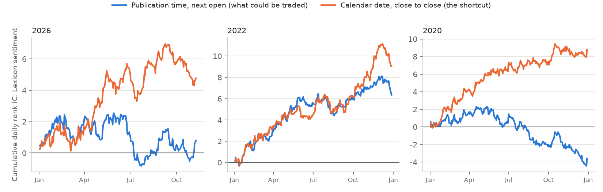
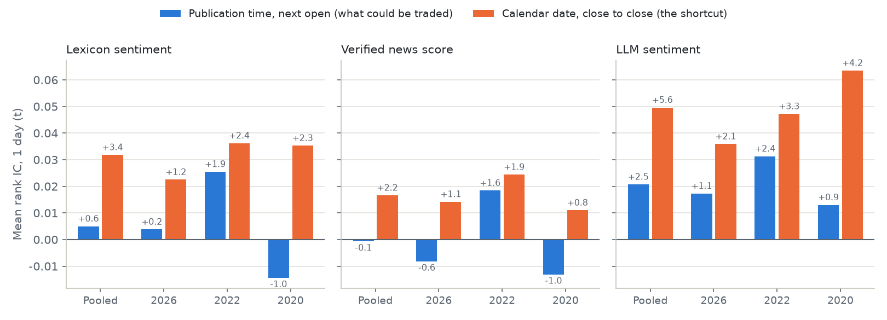
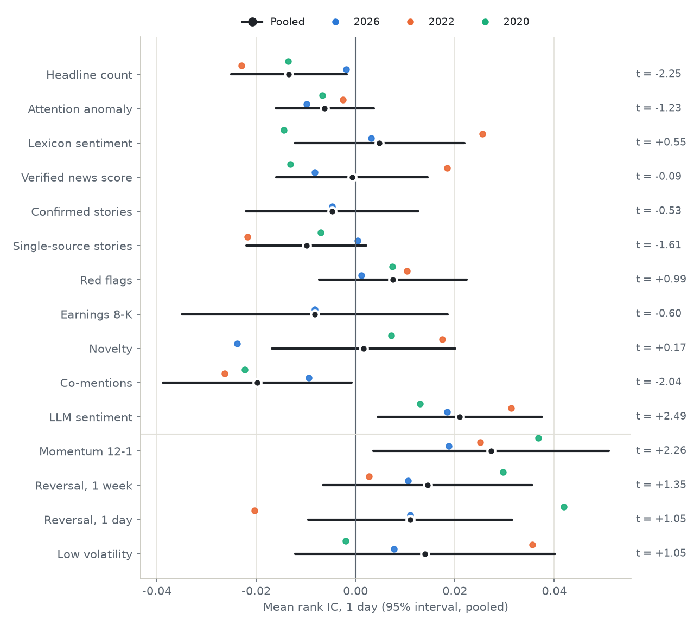
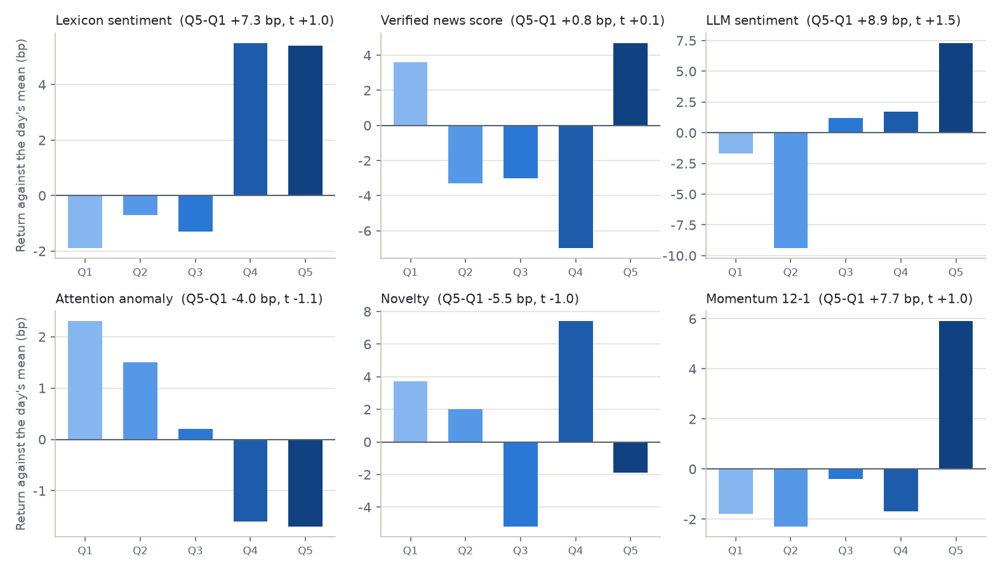
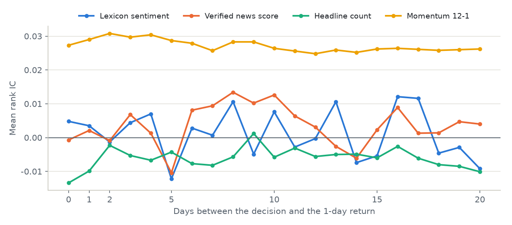

Home › Guides
Do news headlines predict stock returns? Ten news factors, tested point in time
We turned the headlines that ship with Risk-Aware Trading Agents into ten daily news factors for 64 large US stocks, using only what was published before each close, and tested them against returns from the next open in 2020, 2022 and 2026. None of them survives, not even sentiment scored by a language model. Joined to prices by calendar date instead, the way many news backtests do it, headline sentiment looks like a real factor.
No news factor survives. Eight of ten are noise. Two (the number of headlines, and how many other companies they name) have a small negative one-day IC that momentum, reversal and low volatility absorb.
A language model reads headlines better, not well enough. Sentiment scored by gpt-5.6-luna has a one-day IC of 0.021 (t = 2.5), positive in all three years, but the price factors absorb it and it changes too fast to trade.
A calendar-date join makes one up. Lexicon sentiment joined by calendar date and tested close to close: rank IC 0.032 (t = 3.4), long-short 36.9 bp a day. Joined by publication time and traded from the next open: 0.005 (t = 0.6) and 7.4 bp.
Most of the gap is read early. Two-thirds of it, +0.018 of IC (t = 4.8), is news published after the close, and it shows up in each of the three years.
Joined by date, a factor appears
Take one factor, the mean lexicon score of a stock's headlines, and compute it twice. Joined by publication time, a headline counts from the first close after it was published, and the trade starts at the next open: what a trader could actually have done. Joined by calendar date, a headline published at 16:05 lands on the row of that day's 16:00 close, and a close-to-close return then starts before the headline existed.
| Lexicon sentiment, one day, 2020 + 2022 + 2026 | Rank IC (t) | Long-short a day |
|---|---|---|
| Publication time, from the next open (what could be traded) | 0.005 (0.6) | 7.4 bp |
| Publication time, close to close | 0.014 (1.5) | 7.8 bp |
| Calendar date, close to close (the shortcut) | 0.032 (3.4) | 36.9 bp |
| Calendar date, from the next open | 0.004 (0.4) | 5.6 bp |
Only the shortcut reads the future. Holding the return window fixed (close to close), the calendar join adds +0.018 to the IC (t = 4.8), two-thirds of the gap to the honest replay. The calendar join with next-open returns does not leak, because the evening's news is out before the next open, and it is no better than the honest replay: the shortcut's edge is the overnight move after news that came out after the close.

The gap is not one lucky year. The leak is +0.0157 (t = 1.8) in 2026, +0.0209 (t = 3.7) in 2022 and +0.0165 (t = 3.1) in 2020, and the package's verified news score shows the same pattern: 0.017 (t = 2.2) joined by date, -0.001 (t = -0.1) joined by time. So does the language model's sentiment, more strongly: 0.050 (t = 5.6) joined by date, 0.021 (t = 2.45) joined by time.

How much moves: a calendar-date join puts 13% of the 2026 headlines and 62.5% of the 2026 SEC 8-K filings (companies report after the close) on an earlier trading day than their publication time allows, and 10% to 11% of the headlines in 2020 and 2022.
Ten news factors in three markets
Each factor is ranked across the 64 stocks every day and compared with the return from the next open to the open 1, 5 and 20 trading days later, on total-return prices. The t-statistics are Newey-West, and the price controls are 12-1 momentum, 1-week and 1-day reversal and 60-day low volatility.

| Factor | Verdict | IC, 1 day (t) | IC, 5 days (t) | After price controls (t) |
|---|---|---|---|---|
| LLM sentiment (gpt-5.6-luna) | weak | +0.021 (+2.49) | +0.023 (+2.06) | +1.09 |
| Headline count | weak | -0.013 (-2.25) | -0.010 (-1.00) | -1.01 |
| Co-mentions | weak | -0.020 (-2.04) | -0.018 (-1.40) | -1.28 |
| Attention anomaly | noise | -0.006 (-1.23) | +0.004 (+0.58) | -0.31 |
| Lexicon sentiment | noise | +0.005 (+0.55) | +0.009 (+0.83) | -0.17 |
| Verified news score | noise | -0.001 (-0.09) | -0.001 (-0.08) | -1.05 |
| Confirmed stories (2026) | noise | -0.005 (-0.53) | +0.003 (+0.25) | -0.31 |
| Single-source stories | noise | -0.010 (-1.61) | -0.008 (-0.71) | -0.44 |
| Red flags | noise | +0.008 (+0.99) | +0.002 (+0.16) | +0.82 |
| Earnings 8-K (2026) | noise | -0.008 (-0.60) | -0.010 (-0.77) | +0.14 |
| Novelty | noise | +0.002 (+0.17) | +0.005 (+0.41) | -0.34 |
| Momentum 12-1 (price, for reference) | +0.027 (+2.26) | +0.034 (+1.67) |
Useful = pooled |t| at least 2 at one or five days, the same sign in every year, and still |t| at least 2 after the price controls (the Fama-MacBeth slope's t is shown). Confirmed stories and earnings 8-Ks exist in 2026 only: the 2020 and 2022 headlines come from one feed without SEC filings, so no story can be confirmed there.
- A language model's sentiment is the strongest news factor, and still weak. Its IC is positive in every year (0.031, t = 2.4 in 2022), and after the price controls its five-day residual IC is 0.027 (t = 3.4); but its Fama-MacBeth slope with the controls has a t of 1.1 at one day and 1.9 at five. A lead worth more data, not a factor to trade.
- Lexicon tone does not carry over to the next open. Lexicon sentiment comes closest in the 2022 bear market (0.026, t = 1.9) and turns negative in 2020.
- More news, slightly lower next-day returns, explained by price. Stocks with many headlines are the day's big movers; with reversal and the other price factors in the regression the effect is no longer significant.
- Market regimes add nothing reliable. Three of about 36 regime readings have |t| just above 2, close to what chance gives.
Quintiles, decay and turnover

The top quintile of headline sentiment did a little better than the bottom one, 7.3 bp a day (t = 1.0), not enough to tell from chance. The factor replaces 85% of its top quintile every day, so that spread breaks even at 2.2 bp of cost per side, less than the package's default 5 bp slippage. Sentiment scored by the language model does a little better, 8.9 bp a day (t = 1.5), and changes just as fast (82% of its top quintile is new each day), so it breaks even at 2.7 bp. Momentum, for comparison, keeps 94% of its top quintile from one day to the next.

The decay curves of the news factors wander around zero from the first day on; momentum's stays flat and positive for a month.
The factors
- Headline count since the previous close, and the attention anomaly: that count against the stock's own mean of the 20 trading days before.
- Lexicon sentiment: the mean score of the day's headlines from the package's finance lexicon, opinion pieces left out.
- Verified news score, confirmed and single-source stories, and red flags: the 72-hour report the trading agents read, with stories clustered and graded by who carries them.
- Earnings 8-K: an SEC filing with Item 2.02 since the previous close (2026).
- Novelty: how little the day's headlines repeat the five days before.
- Co-mentions: how many other covered companies the day's headlines name.
- LLM sentiment (optional): the mean score from -1 to 1 that a language model gave the day's headlines; here gpt-5.6-luna at temperature 0, 62,722 headlines scored once and cached.
Every value for a day uses only items published before that day's close (16:00 New York, 13:00 on early-close days). A test rewrites every headline published at or after a close, adds new ones, and checks that no feature up to that close changes.
Run it yourself
pip install risk-aware-trading-agents # Python 3.10+ riskaware research factors # all three years, about 80 seconds riskaware research factors --period 2022 # one year riskaware research factors --llm # add a sentiment factor scored by a local LLM (Ollama, free)
The run writes factors.json (every number), factors.md, the charts on this page and the daily ICs to a folder. With --llm, each headline gets a score from -1 to 1 from a model of your choice, cached so that it is scored once; the command prints the token estimate first and asks before a paid model starts. See docs/news-factors.md.
Limits
These are 64 of the largest US stocks, heavily covered and quickly priced; news may matter more for small caps. The news is headlines only, from one feed (Benzinga), plus SEC 8-K filings in 2026. Decisions happen once a day after the close, so faster reactions to a headline are outside what daily bars can test. And a year per market is short: an IC of 0.01 needs several years to separate from zero.
Questions
Does news sentiment predict stock returns?
Not in this test. The lexicon sentiment of headlines published before the close has a one-day rank IC of 0.005 (t = 0.6) against returns from the next open, and none of the ten news factors survives the price controls.
How much does a calendar-date join inflate a news factor?
For headline sentiment, the IC goes from 0.005 to 0.032 and the long-short spread from 7.4 bp to 36.9 bp a day. Two-thirds of the difference, +0.018 of IC (t = 4.8), comes from headlines published after the close.
Can I run the news factor test myself?
Yes. The prices and headlines ship with the package, so riskaware research factors needs no download and no API key.
Can a language model score the headlines?
Yes. --llm scores each headline with a local model through Ollama for free, or with a paid API after showing the token estimate, and adds an LLM sentiment factor to the same tests; --llm-export and --llm-import run the scoring through any batch API instead. Scored by gpt-5.6-luna, it is the strongest news factor on this page (one-day IC 0.021, t = 2.5, positive in all three years), and the price factors still absorb it. A model trained after 2020 or 2022 may know what happened next, so its scores for those years are not blind; luna's IC is lowest in 2020, which is some comfort but no proof.